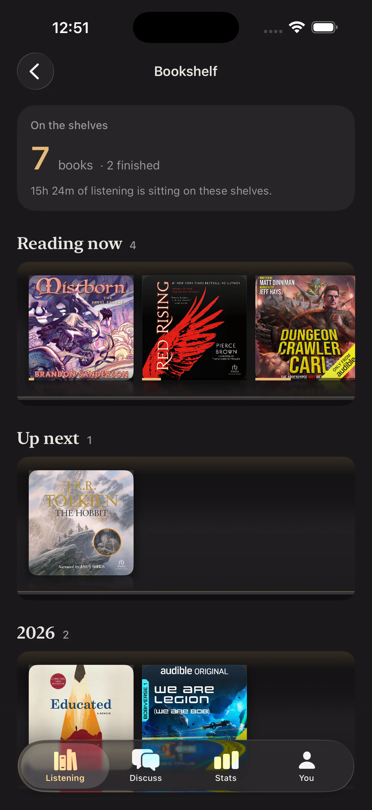

Audiobook runtime lookup
How long is that audiobook?
Runtimes for 65 popular audiobooks, with listening time at faster speeds and the number of days to finish at 15 to 120 minutes a day.
Lengths are approximate and vary slightly by edition. For any book not listed, use the speed calculator or goal calculator with the runtime from your app.
Beyond the runtime
Track what you actually listen to.
Booktrace is an iPhone audiobook tracker that records sessions, chapters, narrators and speed across every app you listen in.
Try Booktrace free